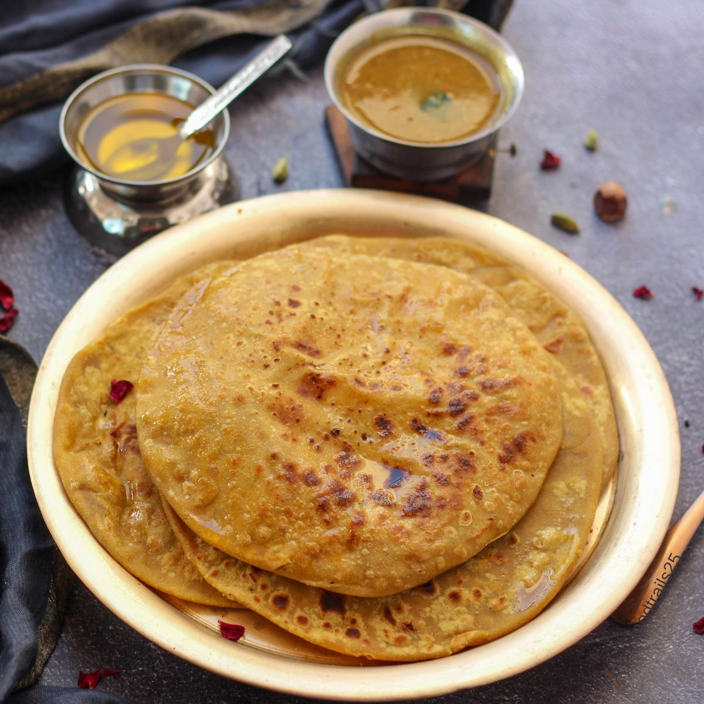

Puranpoli

Description:
Puran Poli is a legendary sweet flatbread that holds a special place in the heart of every Maharashtrian, especially during festivals like Gudi Padwa and Holi! It features a soft, golden outer wheat layer stuffed with a luscious, aromatic filling made of sweet jaggery
and perfectly mashed chana dal. Scented with a hint of cardamom and nutmeg, every warm
bite of this melt-in-your-mouth delicacy is traditionally elevated by drowning it in a
generous pool of pure, golden ghee.
Ingredients:
- Chana Dal (Split Chickpeas): 1 cup, rinsed and soaked for 30 minutes.
- Jaggery (Gur): 1 cup, finely chopped or grated (use organic dark jaggery for a rich colour).
- Cardamom Powder: 1 teaspoon, freshly ground.
- Nutmeg Powder (Jaiphal): ¼ teaspoon, for that signature festive aroma.
- Dry Ginger Powder (Saunth): ¼ teaspoon (optional, aids digestion).
- Whole Wheat Flour (Atta): 1 cup.
- All-Purpose Flour (Maida): 1 cup (using a 50:50 mix gives the best stretch and texture).
- urmeric Powder: ¼ teaspoon, for a beautiful golden hue.
- Salt: A tiny pinch, to balance the sweetness.
- Oil: 2-3 tablespoons, to knead into a very soft, pliable dough.
- Water: As needed, to knead the dough.
- Rice Flour or Maida: For dusting and rolling.
- Pure Desi Ghee: 4-5 tablespoons, for roasting the polis and serving.
Steps to make puranpoli:
- Make the Filling (Puran): Boil chana dal in cooker, cook it with jaggery later until thick and dry, add flavours such as cardamom, nutmeg,etc, mash them and let it cool.
- Prepare the Dough (Poli): mix wheat flour, maida, turmeric powder and pinch of salt, Knead it well, coat it with oil and let it rest for 30 minutes.
- Stuff & Roll: Divide dough and sweet stuffing into equal-sized balls, flatten a dough ball and place stuffing inside it, seal the edges and remove excess dough then roll it gently and make it thin.
- Roast & Serve: Heat the tawa on medium-high heat, cook the poli until tiny bubbles appear then flip, apply ghee on both sides and serve it extra teaspoon of ghee added on top.